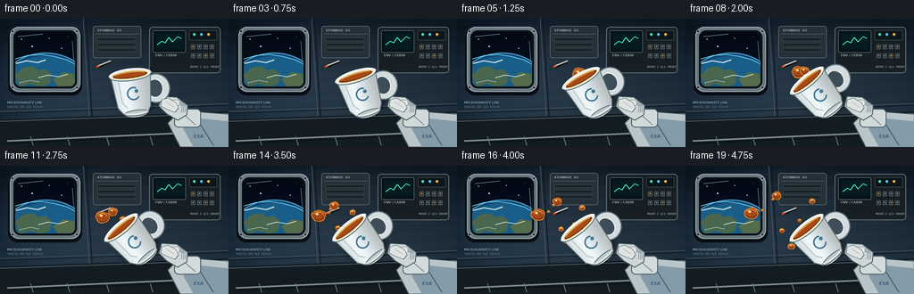
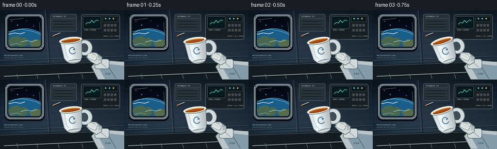

CODING AGENTS AS PIXEL WORLD MODELS
traex/GPT-5.6-Sol · mechanics_0003
点击播放 · 原生 RGB 像素
逐轮保存的候选
回放视频、检查图与代码变化。
每份候选均可单独播放。实际图片检查记录在下方工具轨迹中。
候选 01播放与检查图
点击播放 · 原生 RGB 像素


展开代码变化
--- 上一保存版本
+++ 本次保存版本
@@ -0,0 +1,306 @@
+from pathlib import Path
+import json, math
+import numpy as np
+from PIL import Image, ImageDraw, ImageFont, ImageFilter
+import artifact_io
+
+CASE_DIR = Path(__file__).resolve().parent
+SPEC = json.loads((CASE_DIR / "task_spec.json").read_text())
+W, H, N = SPEC["width"], SPEC["height"], SPEC["frames"]
+S = 4
+
+def sc(v): return int(round(v*S))
+def box(b): return tuple(sc(x) for x in b)
+def font(size, bold=False):
+ p = "/usr/share/fonts/truetype/dejavu/DejaVuSans-Bold.ttf" if bold else "/usr/share/fonts/truetype/dejavu/DejaVuSans.ttf"
+ try: return ImageFont.truetype(p, sc(size))
+ except: return ImageFont.load_default()
+
+def line(draw, pts, fill, width=1):
+ draw.line([(sc(x),sc(y)) for x,y in pts], fill=fill, width=max(1,sc(width)), joint="curve")
+
+def poly(draw, pts, fill, outline=None, width=1):
+ q=[(sc(x),sc(y)) for x,y in pts]
+ draw.polygon(q, fill=fill)
+ if outline: draw.line(q+[q[0]], fill=outline, width=sc(width), joint="curve")
+
+def ellipse(draw, b, fill, outline=None, width=1):
+ draw.ellipse(box(b), fill=fill, outline=outline, width=sc(width) if outline else 1)
+
+def rounded(draw,b,r,fill,outline=None,width=1):
+ draw.rounded_rectangle(box(b), radius=sc(r), fill=fill, outline=outline, width=sc(width) if outline else 1)
+
+def make_background():
+ yy, xx = np.mgrid[0:H*S,0:W*S]
+ y=yy/(H*S-1); x=xx/(W*S-1)
+ # cold brushed alloy wall, lit from the orbital window
+ base=np.zeros((H*S,W*S,3),np.float32)
+ base[...,0]=22+18*y+6*x
+ base[...,1]=31+26*y+8*x
+ base[...,2]=40+30*y+10*x
+ glow=np.exp(-(((x-.23)/.28)**2+((y-.38)/.50)**2))*17
+ base += glow[...,None]*np.array([.45,.72,1.0])
+ bands=1.2*np.sin((yy+xx*.12)/9.0)+.6*np.sin(yy/2.7)
+ base += bands[...,None]
+ vig=np.clip(((x-.5)**2/.36+(y-.48)**2/.35),0,1)*16
+ base-=vig[...,None]
+ im=Image.fromarray(np.uint8(np.clip(base,0,255)),"RGB")
+ d=ImageDraw.Draw(im)
+ # Structural seams and ribs
+ line(d,[(0,104),(256,95)],(66,82,94),1)
+ line(d,[(0,106),(256,97)],(15,24,32),1)
+ line(d,[(93,0),(102,144)],(64,79,90),1)
+ line(d,[(96,0),(105,144)],(13,21,28),1)
+ poly(d,[(0,113),(256,104),(256,144),(0,144)],(19,28,35))
+ line(d,[(0,115),(256,106)],(91,106,115),1)
+ # window frame shadow and outer bezel
+ rounded(d,(9,10,92,86),11,(8,14,20))
+ rounded(d,(11,9,90,82),10,(105,119,127),outline=(157,170,176),width=1)
+ rounded(d,(15,13,86,78),8,(32,43,51),outline=(8,15,20),width=2)
+ # window glass inset made separately for clean masking
+ win=Image.new("RGB",(sc(67),sc(61)),(4,10,22))
+ wd=ImageDraw.Draw(win)
+ # space gradient
+ warr=np.asarray(win).copy()
+ for py in range(warr.shape[0]):
+ u=py/max(1,warr.shape[0]-1)
+ warr[py,:,0]=int(3+3*u); warr[py,:,1]=int(8+10*u); warr[py,:,2]=int(19+18*u)
+ win=Image.fromarray(warr); wd=ImageDraw.Draw(win)
+ # stars deterministic
+ for sx,sy,rr,br in [(7,8,.45,220),(19,16,.7,245),(38,7,.45,170),(52,18,.55,230),(59,5,.35,180),(30,25,.35,190),(11,30,.4,220)]:
+ wd.ellipse((sc(sx-rr),sc(sy-rr),sc(sx+rr),sc(sy+rr)),fill=(br,br,br))
+ # Earth disk, low horizon across bottom of window
+ wd.ellipse((sc(-19),sc(23),sc(87),sc(112)),fill=(16,72,116),outline=(85,177,221),width=sc(1))
+ wd.ellipse((sc(-16),sc(27),sc(84),sc(109)),fill=(24,94,137))
+ # continents and night coast
+ poly(wd,[(0,48),(8,40),(19,38),(27,43),(33,41),(40,46),(39,57),(30,62),(16,58),(5,62)],(73,103,78))
+ poly(wd,[(42,53),(54,45),(66,47),(67,60),(57,64),(48,61)],(84,107,76))
+ # clouds
+ line(wd,[(1,35),(13,32),(25,34),(34,31)],(191,220,225),1.4)
+ line(wd,[(26,51),(37,48),(49,50),(59,47)],(202,226,228),1.1)
+ line(wd,[(4,57),(17,54),(27,56)],(175,211,220),.8)
+ # blue atmosphere rim
+ line(wd,[(0,30),(14,26),(29,25),(43,27),(58,31),(67,36)],(111,211,247),1.1)
+ # paste with rounded mask
+ mask=Image.new("L",win.size,0); ImageDraw.Draw(mask).rounded_rectangle((0,0,win.width-1,win.height-1),radius=sc(6),fill=255)
+ im.paste(win,(sc(17),sc(15)),mask)
+ d=ImageDraw.Draw(im)
+ # window reflections
+ line(d,[(20,20),(48,17)],(130,168,188),.7)
+ line(d,[(81,25),(83,52)],(85,118,135),.7)
+ for bx,by in [(14,14),(86,14),(14,77),(86,77)]:
+ ellipse(d,(bx-1.8,by-1.8,bx+1.8,by+1.8),(49,57,62),outline=(189,199,202),width=.6)
+ line(d,[(bx-1,by),(bx+1,by)],(20,26,30),.5)
+ # instrument bank
+ rounded(d,(167,9,247,61),4,(23,31,37),outline=(92,108,117),width=1)
+ rounded(d,(171,13,208,38),2,(5,18,24),outline=(83,101,106),width=.7)
+ rounded(d,(174,16,205,34),1,(5,27,32))
+ line(d,[(176,29),(181,25),(185,27),(189,21),(193,26),(199,20),(203,22)],(69,225,197),1)
+ d.text((sc(174),sc(39)),"ENV / CABIN",font=font(3.5,bold=True),fill=(137,160,166))
+ rounded(d,(212,13,243,24),1,(12,23,29),outline=(72,88,95),width=.5)
+ for i,c in enumerate([(87,210,169),(89,193,223),(241,173,75)]):
+ ellipse(d,(216+i*8,16,219+i*8,19),c)
+ for row in range(2):
+ for col in range(4):
+ x0=214+col*7; y0=29+row*10
+ rounded(d,(x0,y0,x0+4.5,y0+5),.6,(44,53,58),outline=(103,114,118),width=.4)
+ ellipse(d,(x0+1.4,y0+1.4,x0+3.1,y0+3.1),(201,119,54) if (row+col)%3==0 else (82,137,145))
+ d.text((sc(213),sc(52)),"NODE 2 ⢠ORBIT",font=font(3.1,bold=True),fill=(125,145,152))
+ # central storage panel and labels
+ rounded(d,(104,8,158,44),3,(37,48,56),outline=(90,106,115),width=.8)
+ line(d,[(107,17),(155,17)],(92,108,116),.5)
+ d.text((sc(109),sc(11)),"STOWAGE 03",font=font(3.4,bold=True),fill=(161,175,180))
+ for i in range(3): rounded(d,(109,21+i*6,152,25+i*6),.8,(26,35,41),outline=(66,79,86),width=.4)
+ # lower floor rails
+ line(d,[(8,137),(250,126)],(126,139,145),2)
+ line(d,[(8,140),(250,129)],(7,13,18),1)
+ for x0 in [34,75,119,168,218]:
+ line(d,[(x0,132),(x0+3,142)],(104,117,123),1)
+ # floating pen, another zero-g cue
+ line(d,[(109,54),(124,48)],(12,16,18),3)
+ line(d,[(109,53),(124,47)],(204,211,207),1.5)
+ line(d,[(108,54),(111,53)],(227,70,51),2)
+ return im
+
+BACKGROUND=make_background()
+
+def draw_arm(im, frame):
+ d=ImageDraw.Draw(im)
+ # forearm and cuff enter from right-bottom
+ poly(d,[(256,107),(256,144),(202,144),(188,117),(203,102),(229,105)],(185,197,201),outline=(78,96,105),width=1)
+ poly(d,[(256,115),(256,144),(217,144),(205,123),(225,112)],(133,155,168))
+ line(d,[(219,110),(239,142)],(74,104,125),1.2)
+ rounded(d,(195,101,225,122),5,(210,218,218),outline=(72,91,100),width=1)
+ line(d,[(202,104),(219,119)],(110,131,139),.8)
+ d.text((sc(217),sc(129)),"ESA",font=font(5,bold=True),fill=(55,91,124))
+ # palm and curved gripping fingers behind cup
+ poly(d,[(181,87),(198,88),(210,97),(209,108),(199,114),(187,107),(178,98)],(207,216,216),outline=(77,95,102),width=1)
+ for off in range(3):
+ line(d,[(195+off*3,91),(204+off*2,98),(203+off*2,105)],(126,144,149),.8)
+ # seam pads
+ rounded(d,(190,91,201,98),3,(230,235,233),outline=(131,145,149),width=.5)
+
+def make_cup(angle):
+ size=sc(92)
+ layer=Image.new("RGBA",(size,size),(0,0,0,0))
+ d=ImageDraw.Draw(layer)
+ # soft cast shadow behind cup
+ shadow=Image.new("RGBA",layer.size,(0,0,0,0)); sd=ImageDraw.Draw(shadow)
+ sd.ellipse(box((21,21,68,72)),fill=(0,0,0,110)); shadow=shadow.filter(ImageFilter.GaussianBlur(sc(3)))
+ layer.alpha_composite(shadow)
+ d=ImageDraw.Draw(layer)
+ # handle outer and inner
+ d.ellipse(box((52,27,84,60)),fill=(211,220,221,255),outline=(93,112,121,255),width=sc(1.2))
+ d.ellipse(box((58,33,76,54)),fill=(74,91,99,180),outline=(240,244,241,255),width=sc(1))
+ # cup body via horizontal gradient clipped by contour mask
+ mask=Image.new("L",layer.size,0); md=ImageDraw.Draw(mask)
+ pts=[(19,25),(64,25),(60,62),(56,69),(29,69),(23,61)]
+ md.polygon([(sc(x),sc(y)) for x,y in pts],fill=255)
+ md.ellipse(box((29,62,57,73)),fill=255)
+ arr=np.zeros((size,size,4),dtype=np.uint8)
+ for x in range(size):
+ ux=x/S
+ shade=214+34*math.exp(-((ux-34)/11)**2)-22*math.exp(-((ux-61)/9)**2)
+ arr[:,x,:3]=np.clip([shade*.96,shade,shade*1.01],0,255)
+ arr[:,x,3]=255
+ body=Image.fromarray(arr,"RGBA"); body.putalpha(mask); layer.alpha_composite(body)
+ d=ImageDraw.Draw(layer)
+ # body edge and base
+ line(d,[(19,25),(23,61),(29,69),(56,69),(60,62),(64,25)],(91,109,117,255),1)
+ d.ellipse(box((29,65,57,72)),fill=(189,202,204,255),outline=(92,110,116,255),width=sc(1))
+ d.arc(box((30,64,56,70)),0,180,fill=(249,251,246,255),width=sc(1))
+ # subtle cup logo
+ d.arc(box((35,39,50,54)),35,300,fill=(76,132,164,220),width=sc(1.7))
+ d.ellipse(box((44,42,48,46)),fill=(74,133,163,220))
+ # rim and tea surface
+ d.ellipse(box((17,18,65,32)),fill=(236,242,239,255),outline=(83,104,112,255),width=sc(1))
+ d.ellipse(box((21,21,61,29.5)),fill=(105,48,21,255),outline=(246,197,98,255),width=sc(.7))
+ d.ellipse(box((23,22,59,27.8)),fill=(168,74,24,255))
+ d.arc(box((24,22,58,27)),185,350,fill=(255,196,91,255),width=sc(.8))
+ d.arc(box((17,18,65,32)),180,360,fill=(255,255,250,255),width=sc(1.3))
+ # ceramic glints
+ line(d,[(27,32),(29,56),(34,62)],(255,255,252,180),1.2)
+ # rotate around sprite center; positive angle tips opening upper-left
+ return layer.rotate(angle,resample=Image.Resampling.BICUBIC,expand=True)
+
+def cup_angle(f):
+ # deliberate, careful tilt, settling at about 38 degrees
+ u=min(1.0,f/8.0)
+ e=u*u*(3-2*u)
+ return 7+32*e + (0.7*math.sin((f-8)*.55) if f>8 else 0)
+
+def cup_center(f):
+ return (153+0.45*math.sin(f*.31),83+0.3*math.sin(f*.44))
+
+def rotate_local(x,y,a):
+ r=math.radians(a)
+ # screen coordinates matching PIL's visual positive rotation
+ return (math.cos(r)*x+math.sin(r)*y,-math.sin(r)*x+math.cos(r)*y)
+
+def origin_at(f):
+ a=cup_angle(f); cx,cy=cup_center(f)
+ ox,oy=rotate_local(-4,-23,a)
+ return cx+ox,cy+oy
+
+def organic_points(cx,cy,rx,ry,phase,n=24):
+ out=[]
+ for k in range(n):
+ a=2*math.pi*k/n
+ wob=1+.055*math.sin(3*a+phase)+.03*math.sin(5*a-phase*.7)
+ out.append((cx+rx*wob*math.cos(a),cy+ry*wob*math.sin(a)))
+ return out
+
+def draw_glob(im,cx,cy,rx,ry,phase,alpha=255):
+ # Tea glob with translucent halo, dark lower edge, and specular highlights.
+ halo=Image.new("RGBA",im.size,(0,0,0,0)); hd=ImageDraw.Draw(halo)
+ hd.ellipse(box((cx-rx-1.2,cy-ry-1.2,cx+rx+1.2,cy+ry+1.2)),fill=(226,126,42,75))
+ halo=halo.filter(ImageFilter.GaussianBlur(sc(1.4))); im.alpha_composite(halo)
+ d=ImageDraw.Draw(im)
+ pts=organic_points(cx,cy,rx,ry,phase)
+ poly(d,pts,(166,72,22,alpha),outline=(244,151,57,alpha),width=.8)
+ # warm transmitted-light edge and shaded lower portion
+ d.arc(box((cx-rx*.80,cy-ry*.72,cx+rx*.84,cy+ry*.86)),10,150,fill=(107,43,18,220),width=sc(max(.6,rx*.14)))
+ ellipse(d,(cx-rx*.42,cy-ry*.48,cx-rx*.02,cy-ry*.10),(255,218,144,220))
+ ellipse(d,(cx-rx*.28,cy-ry*.38,cx-rx*.11,cy-ry*.20),(255,249,218,245))
+ d.arc(box((cx-rx*.75,cy-ry*.72,cx+rx*.72,cy+ry*.70)),205,345,fill=(255,180,72,210),width=sc(.65))
+
+def bezier(p0,p1,p2,p3,n=24):
+ pts=[]
+ for i in range(n):
+ t=i/(n-1); u=1-t
+ pts.append((u**3*p0[0]+3*u*u*t*p1[0]+3*u*t*t*p2[0]+t**3*p3[0],u**3*p0[1]+3*u*u*t*p1[1]+3*u*t*t*p2[1]+t**3*p3[1]))
+ return pts
+
+# birth, vx, vy, radius-x, radius-y, phase. Motion is inertial with tiny drift.
+DROPS=[
+ (3,-2.65,-.58,7.6,6.2,.2),
+ (5,-1.65,-2.25,4.8,4.3,1.0),
+ (7,-1.05,1.92,3.7,3.1,2.2),
+ (8,.55,-2.55,3.0,2.7,3.4),
+ (10,-3.35,.55,2.5,2.2,4.1),
+ (12,-.15,2.55,2.15,1.9,5.0),
+ (14,-2.0,-1.25,1.65,1.5,2.8),
+]
+
+def draw_tea(im,f):
+ d=ImageDraw.Draw(im)
+ # surface-tension neck from rim to the main escaping mass
+ if 2 <= f <= 9:
+ o=origin_at(f)
+ age=max(0,f-3)
+ end=(o[0]-max(1,age*2.65),o[1]-age*.58)
+ pts=bezier(o,(o[0]-3,o[1]-4),(end[0]+4,end[1]+2),end)
+ # soft gold outer ribbon and dark core
+ line(d,pts,(246,152,57,220),max(1.0,4.5-age*.34))
+ line(d,pts,(156,65,20,255),max(.7,3.1-age*.27))
+ if f<5:
+ draw_glob(im,o[0]-1.5,o[1]-.7,2.0+f*.25,1.7,f*.5)
+ # tiny meniscus bead before release
+ if f in (1,2):
+ o=origin_at(f); draw_glob(im,o[0]-1,o[1],1.1+f*.35,.9+f*.25,f)
+ for idx,(birth,vx,vy,rx,ry,ph) in enumerate(DROPS):
+ if f < birth: continue
+ age=f-birth
+ o=origin_at(birth)
+ # small fan-out acceleration and individual gentle sinusoidal drift
+ cx=o[0]+vx*age + .035*(idx-3)*age*age
+ cy=o[1]+vy*age + .10*math.sin(age*.45+idx)
+ grow=min(1,(age+1)/3)
+ rr=max(.7,rx*(.45+.55*grow)); rry=max(.65,ry*(.45+.55*grow))
+ # slow liquid shape tumbling
+ draw_glob(im,cx,cy,rr,rry,ph+age*.32)
+ # occasional satellite bead split off from the two largest droplets
+ if idx==0 and age>=7:
+ draw_glob(im,cx+rx+2+age*.18,cy-ry*.55,1.25,1.05,age)
+ if idx==1 and age>=8:
+ draw_glob(im,cx-4.3,cy+4.0,1.0,.9,age*.7)
+
+def draw_foreground_finger(im,f):
+ d=ImageDraw.Draw(im)
+ # A thumb crossing the handle makes the grip legible.
+ poly(d,[(181,91),(188,89),(197,94),(200,100),(196,105),(188,102),(180,98)],(222,228,226),outline=(93,108,113),width=.8)
+ line(d,[(186,93),(195,99)],(145,157,159),.6)
+
+def render_frame(f):
+ im=BACKGROUND.copy().convert("RGBA")
+ # very subtle illumination pulse/reflection, no camera jitter
+ draw_tea(im,f)
+ draw_arm(im,f)
+ a=cup_angle(f); cx,cy=cup_center(f)
+ cup=make_cup(a)
+ im.alpha_composite(cup,(int(sc(cx)-cup.width/2),int(sc(cy)-cup.height/2)))
+ draw_foreground_finger(im,f)
+ # HUD-like station label stays in-world and understated
+ d=ImageDraw.Draw(im)
+ d.text((sc(8),sc(92)),"MICROGRAVITY LAB",font=font(3.5,bold=True),fill=(128,151,161,190))
+ d.text((sc(8),sc(97)),"ORBITAL DAY ⢠418 km",font=font(3.0),fill=(101,124,135,175))
+ # Final crisp RGB downsample
+ return np.asarray(im.convert("RGB").resize((W,H),Image.Resampling.LANCZOS),dtype=np.uint8)
+
+def main():
+ frames=np.stack([render_frame(i) for i in range(N)],axis=0)
+ artifact_io.save(frames,CASE_DIR)
+ print(f"saved {frames.shape} RGB frames; range={frames.min()}..{frames.max()}")
+
+if __name__ == "__main__":
+ main()
可观测工具轨迹
实际执行的命令与返回图片。
命令 1exit 0
/bin/bash -lc "cat prompt.txt && printf '\\n--- GENERATION_RULES ---\\n' && cat GENERATION_RULES.md && printf '\\n--- TASK_SPEC ---\\n' && cat task_spec.json"
命令 2exit 0
/bin/bash -lc "find . -maxdepth 2 -type f -printf '%p\\n' | sort && printf '\\n--- binaries ---\\n' && command -v ffmpeg || true && command -v python3 || true"
命令 3exit 0
/bin/bash -lc 'cat artifact_io.py'
命令 4exit 0
/bin/bash -lc "cat > generate.py <<'PY'
from pathlib import Path
import json, math
import numpy as np
from PIL import Image, ImageDraw, ImageFont, ImageFilter
import artifact_io
CASE_DIR = Path(__file__).resolve().parent
SPEC = json.loads((CASE_DIR / \"task_spec.json\").read_text())
W, H, N = SPEC[\"width\"], SPEC[\"height\"], SPEC[\"frames\"]
S = 4
def sc(v): return int(round(v*S))
def box(b): return tuple(sc(x) for x in b)
def font(size, bold=False):
p = \"/usr/share/fonts/truetype/dejavu/DejaVuSans-Bold.ttf\" if bold else \"/usr/share/fonts/truetype/dejavu/DejaVuSans.ttf\"
try: return ImageFont.truetype(p, sc(size))
except: return ImageFont.load_default()
def line(draw, pts, fill, width=1):
draw.line([(sc(x),sc(y)) for x,y in pts], fill=fill, width=max(1,sc(width)), joint=\"curve\")
def poly(draw, pts, fill, outline=None, width=1):
q=[(sc(x),sc(y)) for x,y in pts]
draw.polygon(q, fill=fill)
if outline: draw.line(q+[q[0]], fill=outline, width=sc(width), joint=\"curve\")
def ellipse(draw, b, fill, outline=None, width=1):
draw.ellipse(box(b), fill=fill, outline=outline, width=sc(width) if outline else 1)
def rounded(draw,b,r,fill,outline=None,width=1):
draw.rounded_rectangle(box(b), radius=sc(r), fill=fill, outline=outline, width=sc(width) if outline else 1)
def make_background():
yy, xx = np.mgrid[0:H*S,0:W*S]
y=yy/(H*S-1); x=xx/(W*S-1)
# cold brushed alloy wall, lit from the orbital window
base=np.zeros((H*S,W*S,3),np.float32)
base[...,0]=22+18*y+6*x
base[...,1]=31+26*y+8*x
base[...,2]=40+30*y+10*x
glow=np.exp(-(((x-.23)/.28)**2+((y-.38)/.50)**2))*17
base += glow[...,None]*np.array([.45,.72,1.0])
bands=1.2*np.sin((yy+xx*.12)/9.0)+.6*np.sin(yy/2.7)
base += bands[...,None]
vig=np.clip(((x-.5)**2/.36+(y-.48)**2/.35),0,1)*16
base-=vig[...,None]
im=Image.fromarray(np.uint8(np.clip(base,0,255)),\"RGB\")
d=ImageDraw.Draw(im)
# Structural seams and ribs
line(d,[(0,104),(256,95)],(66,82,94),1)
line(d,[(0,106),(256,97)],(15,24,32),1)
line(d,[(93,0),(102,144)],(64,79,90),1)
line(d,[(96,0),(105,144)],(13,21,28),1)
poly(d,[(0,113),(256,104),(256,144),(0,144)],(19,28,35))
line(d,[(0,115),(256,106)],(91,106,115),1)
# window frame shadow and outer bezel
rounded(d,(9,10,92,86),11,(8,14,20))
rounded(d,(11,9,90,82),10,(105,119,127),outline=(157,170,176),width=1)
rounded(d,(15,13,86,78),8,(32,43,51),outline=(8,15,20),width=2)
# window glass inset made separately for clean masking
win=Image.new(\"RGB\",(sc(67),sc(61)),(4,10,22))
wd=ImageDraw.Draw(win)
# space gradient
warr=np.asarray(win).copy()
for py in range(warr.shape[0]):
u=py/max(1,warr.shape[0]-1)
warr[py,:,0]=int(3+3*u); warr[py,:,1]=int(8+10*u); warr[py,:,2]=int(19+18*u)
win=Image.fromarray(warr); wd=ImageDraw.Draw(win)
# stars deterministic
for sx,sy,rr,br in [(7,8,.45,220),(19,16,.7,245),(38,7,.45,170),(52,18,.55,230),(59,5,.35,180),(30,25,.35,190),(11,30,.4,220)]:
wd.ellipse((sc(sx-rr),sc(sy-rr),sc(sx+rr),sc(sy+rr)),fill=(br,br,br))
# Earth disk, low horizon across bottom of window
wd.ellipse((sc(-19),sc(23),sc(87),sc(112)),fill=(16,72,116),outline=(85,177,221),width=sc(1))
wd.ellipse((sc(-16),sc(27),sc(84),sc(109)),fill=(24,94,137))
# continents and night coast
poly(wd,[(0,48),(8,40),(19,38),(27,43),(33,41),(40,46),(39,57),(30,62),(16,58),(5,62)],(73,103,78))
poly(wd,[(42,53),(54,45),(66,47),(67,60),(57,64),(48,61)],(84,107,76))
# clouds
line(wd,[(1,35),(13,32),(25,34),(34,31)],(191,220,225),1.4)
line(wd,[(26,51),(37,48),(49,50),(59,47)],(202,226,228),1.1)
line(wd,[(4,57),(17,54),(27,56)],(175,211,220),.8)
# blue atmosphere rim
line(wd,[(0,30),(14,26),(29,25),(43,27),(58,31),(67,36)],(111,211,247),1.1)
# paste with rounded mask
mask=Image.new(\"L\",win.size,0); ImageDraw.Draw(mask).rounded_rectangle((0,0,win.width-1,win.height-1),radius=sc(6),fill=255)
im.paste(win,(sc(17),sc(15)),mask)
d=ImageDraw.Draw(im)
# window reflections
line(d,[(20,20),(48,17)],(130,168,188),.7)
line(d,[(81,25),(83,52)],(85,118,135),.7)
for bx,by in [(14,14),(86,14),(14,77),(86,77)]:
ellipse(d,(bx-1.8,by-1.8,bx+1.8,by+1.8),(49,57,62),outline=(189,199,202),width=.6)
line(d,[(bx-1,by),(bx+1,by)],(20,26,30),.5)
# instrument bank
rounded(d,(167,9,247,61),4,(23,31,37),outline=(92,108,117),width=1)
rounded(d,(171,13,208,38),2,(5,18,24),outline=(83,101,106),width=.7)
rounded(d,(174,16,205,34),1,(5,27,32))
line(d,[(176,29),(181,25),(185,27),(189,21),(193,26),(199,20),(203,22)],(69,225,197),1)
d.text((sc(174),sc(39)),\"ENV / CABIN\",font=font(3.5,bold=True),fill=(137,160,166))
rounded(d,(212,13,243,24),1,(12,23,29),outline=(72,88,95),width=.5)
for i,c in enumerate([(87,210,169),(89,193,223),(241,173,75)]):
ellipse(d,(216+i*8,16,219+i*8,19),c)
for row in range(2):
for col in range(4):
x0=214+col*7; y0=29+row*10
rounded(d,(x0,y0,x0+4.5,y0+5),.6,(44,53,58),outline=(103,114,118),width=.4)
ellipse(d,(x0+1.4,y0+1.4,x0+3.1,y0+3.1),(201,119,54) if (row+col)%3==0 else (82,137,145))
d.text((sc(213),sc(52)),\"NODE 2 ⢠ORBIT\",font=font(3.1,bold=True),fill=(125,145,152))
# central storage panel and labels
rounded(d,(104,8,158,44),3,(37,48,56),outline=(90,106,115),width=.8)
line(d,[(107,17),(155,17)],(92,108,116),.5)
d.text((sc(109),sc(11)),\"STOWAGE 03\",font=font(3.4,bold=True),fill=(161,175,180))
for i in range(3): rounded(d,(109,21+i*6,152,25+i*6),.8,(26,35,41),outline=(66,79,86),width=.4)
# lower floor rails
line(d,[(8,137),(250,126)],(126,139,145),2)
line(d,[(8,140),(250,129)],(7,13,18),1)
for x0 in [34,75,119,168,218]:
line(d,[(x0,132),(x0+3,142)],(104,117,123),1)
# floating pen, another zero-g cue
line(d,[(109,54),(124,48)],(12,16,18),3)
line(d,[(109,53),(124,47)],(204,211,207),1.5)
line(d,[(108,54),(111,53)],(227,70,51),2)
return im
BACKGROUND=make_background()
def draw_arm(im, frame):
d=ImageDraw.Draw(im)
# forearm and cuff enter from right-bottom
poly(d,[(256,107),(256,144),(202,144),(188,117),(203,102),(229,105)],(185,197,201),outline=(78,96,105),width=1)
poly(d,[(256,115),(256,144),(217,144),(205,123),(225,112)],(133,155,168))
line(d,[(219,110),(239,142)],(74,104,125),1.2)
rounded(d,(195,101,225,122),5,(210,218,218),outline=(72,91,100),width=1)
line(d,[(202,104),(219,119)],(110,131,139),.8)
d.text((sc(217),sc(129)),\"ESA\",font=font(5,bold=True),fill=(55,91,124))
# palm and curved gripping fingers behind cup
poly(d,[(181,87),(198,88),(210,97),(209,108),(199,114),(187,107),(178,98)],(207,216,216),outline=(77,95,102),width=1)
for off in range(3):
line(d,[(195+off*3,91),(204+off*2,98),(203+off*2,105)],(126,144,149),.8)
# seam pads
rounded(d,(190,91,201,98),3,(230,235,233),outline=(131,145,149),width=.5)
def make_cup(angle):
size=sc(92)
layer=Image.new(\"RGBA\",(size,size),(0,0,0,0))
d=ImageDraw.Draw(layer)
# soft cast shadow behind cup
shadow=Image.new(\"RGBA\",layer.size,(0,0,0,0)); sd=ImageDraw.Draw(shadow)
sd.ellipse(box((21,21,68,72)),fill=(0,0,0,110)); shadow=shadow.filter(ImageFilter.GaussianBlur(sc(3)))
layer.alpha_composite(shadow)
d=ImageDraw.Draw(layer)
# handle outer and inner
d.ellipse(box((52,27,84,60)),fill=(211,220,221,255),outline=(93,112,121,255),width=sc(1.2))
d.ellipse(box((58,33,76,54)),fill=(74,91,99,180),outline=(240,244,241,255),width=sc(1))
# cup body via horizontal gradient clipped by contour mask
mask=Image.new(\"L\",layer.size,0); md=ImageDraw.Draw(mask)
pts=[(19,25),(64,25),(60,62),(56,69),(29,69),(23,61)]
md.polygon([(sc(x),sc(y)) for x,y in pts],fill=255)
md.ellipse(box((29,62,57,73)),fill=255)
arr=np.zeros((size,size,4),dtype=np.uint8)
for x in range(size):
ux=x/S
shade=214+34*math.exp(-((ux-34)/11)**2)-22*math.exp(-((ux-61)/9)**2)
arr[:,x,:3]=np.clip([shade*.96,shade,shade*1.01],0,255)
arr[:,x,3]=255
body=Image.fromarray(arr,\"RGBA\"); body.putalpha(mask); layer.alpha_composite(body)
d=ImageDraw.Draw(layer)
# body edge and base
line(d,[(19,25),(23,61),(29,69),(56,69),(60,62),(64,25)],(91,109,117,255),1)
d.ellipse(box((29,65,57,72)),fill=(189,202,204,255),outline=(92,110,116,255),width=sc(1))
d.arc(box((30,64,56,70)),0,180,fill=(249,251,246,255),width=sc(1))
# subtle cup logo
d.arc(box((35,39,50,54)),35,300,fill=(76,132,164,220),width=sc(1.7))
d.ellipse(box((44,42,48,46)),fill=(74,133,163,220))
# rim and tea surface
d.ellipse(box((17,18,65,32)),fill=(236,242,239,255),outline=(83,104,112,255),width=sc(1))
d.ellipse(box((21,21,61,29.5)),fill=(105,48,21,255),outline=(246,197,98,255),width=sc(.7))
d.ellipse(box((23,22,59,27.8)),fill=(168,74,24,255))
d.arc(box((24,22,58,27)),185,350,fill=(255,196,91,255),width=sc(.8))
d.arc(box((17,18,65,32)),180,360,fill=(255,255,250,255),width=sc(1.3))
# ceramic glints
line(d,[(27,32),(29,56),(34,62)],(255,255,252,180),1.2)
# rotate around sprite center; positive angle tips opening upper-left
return layer.rotate(angle,resample=Image.Resampling.BICUBIC,expand=True)
def cup_angle(f):
# deliberate, careful tilt, settling at about 38 degrees
u=min(1.0,f/8.0)
e=u*u*(3-2*u)
return 7+32*e + (0.7*math.sin((f-8)*.55) if f>8 else 0)
def cup_center(f):
return (153+0.45*math.sin(f*.31),83+0.3*math.sin(f*.44))
def rotate_local(x,y,a):
r=math.radians(a)
# screen coordinates matching PIL's visual positive rotation
return (math.cos(r)*x+math.sin(r)*y,-math.sin(r)*x+math.cos(r)*y)
def origin_at(f):
a=cup_angle(f); cx,cy=cup_center(f)
ox,oy=rotate_local(-4,-23,a)
return cx+ox,cy+oy
def organic_points(cx,cy,rx,ry,phase,n=24):
out=[]
for k in range(n):
a=2*math.pi*k/n
wob=1+.055*math.sin(3*a+phase)+.03*math.sin(5*a-phase*.7)
out.append((cx+rx*wob*math.cos(a),cy+ry*wob*math.sin(a)))
return out
def draw_glob(im,cx,cy,rx,ry,phase,alpha=255):
# Tea glob with translucent halo, dark lower edge, and specular highlights.
halo=Image.new(\"RGBA\",im.size,(0,0,0,0)); hd=ImageDraw.Draw(halo)
hd.ellipse(box((cx-rx-1.2,cy-ry-1.2,cx+rx+1.2,cy+ry+1.2)),fill=(226,126,42,75))
halo=halo.filter(ImageFilter.GaussianBlur(sc(1.4))); im.alpha_composite(halo)
d=ImageDraw.Draw(im)
pts=organic_points(cx,cy,rx,ry,phase)
poly(d,pts,(166,72,22,alpha),outline=(244,151,57,alpha),width=.8)
# warm transmitted-light edge and shaded lower portion
d.arc(box((cx-rx*.80,cy-ry*.72,cx+rx*.84,cy+ry*.86)),10,150,fill=(107,43,18,220),width=sc(max(.6,rx*.14)))
ellipse(d,(cx-rx*.42,cy-ry*.48,cx-rx*.02,cy-ry*.10),(255,218,144,220))
ellipse(d,(cx-rx*.28,cy-ry*.38,cx-rx*.11,cy-ry*.20),(255,249,218,245))
d.arc(box((cx-rx*.75,cy-ry*.72,cx+rx*.72,cy+ry*.70)),205,345,fill=(255,180,72,210),width=sc(.65))
def bezier(p0,p1,p2,p3,n=24):
pts=[]
for i in range(n):
t=i/(n-1); u=1-t
pts.append((u**3*p0[0]+3*u*u*t*p1[0]+3*u*t*t*p2[0]+t**3*p3[0],u**3*p0[1]+3*u*u*t*p1[1]+3*u*t*t*p2[1]+t**3*p3[1]))
return pts
# birth, vx, vy, radius-x, radius-y, phase. Motion is inertial with tiny drift.
DROPS=[
(3,-2.65,-.58,7.6,6.2,.2),
(5,-1.65,-2.25,4.8,4.3,1.0),
(7,-1.05,1.92,3.7,3.1,2.2),
(8,.55,-2.55,3.0,2.7,3.4),
(10,-3.35,.55,2.5,2.2,4.1),
(12,-.15,2.55,2.15,1.9,5.0),
(14,-2.0,-1.25,1.65,1.5,2.8),
]
def draw_tea(im,f):
d=ImageDraw.Draw(im)
# surface-tension neck from rim to the main escaping mass
if 2 <= f <= 9:
o=origin_at(f)
age=max(0,f-3)
end=(o[0]-max(1,age*2.65),o[1]-age*.58)
pts=bezier(o,(o[0]-3,o[1]-4),(end[0]+4,end[1]+2),end)
# soft gold outer ribbon and dark core
line(d,pts,(246,152,57,220),max(1.0,4.5-age*.34))
line(d,pts,(156,65,20,255),max(.7,3.1-age*.27))
if f<5:
draw_glob(im,o[0]-1.5,o[1]-.7,2.0+f*.25,1.7,f*.5)
# tiny meniscus bead before release
if f in (1,2):
o=origin_at(f); draw_glob(im,o[0]-1,o[1],1.1+f*.35,.9+f*.25,f)
for idx,(birth,vx,vy,rx,ry,ph) in enumerate(DROPS):
if f < birth: continue
age=f-birth
o=origin_at(birth)
# small fan-out acceleration and individual gentle sinusoidal drift
cx=o[0]+vx*age + .035*(idx-3)*age*age
cy=o[1]+vy*age + .10*math.sin(age*.45+idx)
grow=min(1,(age+1)/3)
rr=max(.7,rx*(.45+.55*grow)); rry=max(.65,ry*(.45+.55*grow))
# slow liquid shape tumbling
draw_glob(im,cx,cy,rr,rry,ph+age*.32)
# occasional satellite bead split off from the two largest droplets
if idx==0 and age>=7:
draw_glob(im,cx+rx+2+age*.18,cy-ry*.55,1.25,1.05,age)
if idx==1 and age>=8:
draw_glob(im,cx-4.3,cy+4.0,1.0,.9,age*.7)
def draw_foreground_finger(im,f):
d=ImageDraw.Draw(im)
# A thumb crossing the handle makes the grip legible.
poly(d,[(181,91),(188,89),(197,94),(200,100),(196,105),(188,102),(180,98)],(222,228,226),outline=(93,108,113),width=.8)
line(d,[(186,93),(195,99)],(145,157,159),.6)
def render_frame(f):
im=BACKGROUND.copy().convert(\"RGBA\")
# very subtle illumination pulse/reflection, no camera jitter
draw_tea(im,f)
draw_arm(im,f)
a=cup_angle(f); cx,cy=cup_center(f)
cup=make_cup(a)
im.alpha_composite(cup,(int(sc(cx)-cup.width/2),int(sc(cy)-cup.height/2)))
draw_foreground_finger(im,f)
# HUD-like station label stays in-world and understated
d=ImageDraw.Draw(im)
d.text((sc(8),sc(92)),\"MICROGRAVITY LAB\",font=font(3.5,bold=True),fill=(128,151,161,190))
d.text((sc(8),sc(97)),\"ORBITAL DAY ⢠418 km\",font=font(3.0),fill=(101,124,135,175))
# Final crisp RGB downsample
return np.asarray(im.convert(\"RGB\").resize((W,H),Image.Resampling.LANCZOS),dtype=np.uint8)
def main():
frames=np.stack([render_frame(i) for i in range(N)],axis=0)
artifact_io.save(frames,CASE_DIR)
print(f\"saved {frames.shape} RGB frames; range={frames.min()}..{frames.max()}\")
if __name__ == \"__main__\":
main()
PY
python3 generate.py
ls -lh pixels.npz index.html inspection.png transition_check.png frames/00.png frames/19.png"命令 5exit 0
/bin/bash -lc "python3 - <<'PY'
from PIL import Image
import numpy as np
# Coarse luminance map of selected frames, to sanity-check composition without any image model.
chars=' .:-=+*#%@'
for k in [0,3,7,11,15,19]:
a=np.asarray(Image.open(f'frames/{k:02}.png').convert('L').resize((64,36)))
print('\\nFRAME',k)
for row in a:
print(''.join(chars[min(9,int(v)*10//256)] for v in row))
PY"命令 6exit 0
/bin/bash -lc "python3 - <<'PY'
import numpy as np, json
from PIL import Image
z=np.load('pixels.npz')['pixels']
s=json.load(open('task_spec.json'))
print('packed tensor',z.shape,z.dtype)
frames=np.stack([np.asarray(Image.open(f'frames/{i:02}.png').convert('RGB')) for i in range(20)])
print('frame stack',frames.shape,frames.dtype)
print('unique colors frame0/frame19',len(np.unique(frames[0].reshape(-1,3),axis=0)),len(np.unique(frames[-1].reshape(-1,3),axis=0)))
mad=np.abs(frames[1:].astype(int)-frames[:-1].astype(int)).mean((1,2,3))
changed=np.any(frames[1:]"'!=frames[:-1],axis=3).sum((1,2))
print('"'MAD consecutive',np.round(mad,2).tolist())
print('changed pixels',changed.tolist())
assert frames.shape==(s['frames'],s['height'],s['width'],3)
assert frames.dtype==np.uint8
assert z.shape==(s['height'],s['width'],s['frames'])
for p in ['index.html','inspection.png','transition_check.png','pixels.npz','generate.py']:
import os; assert os.path.getsize(p)>0
print('validation OK')
PY"保存候选 1 份；完成命令 6 次；可验证图片返回 0 张。原始 API 响应与完整日志保留在本地。